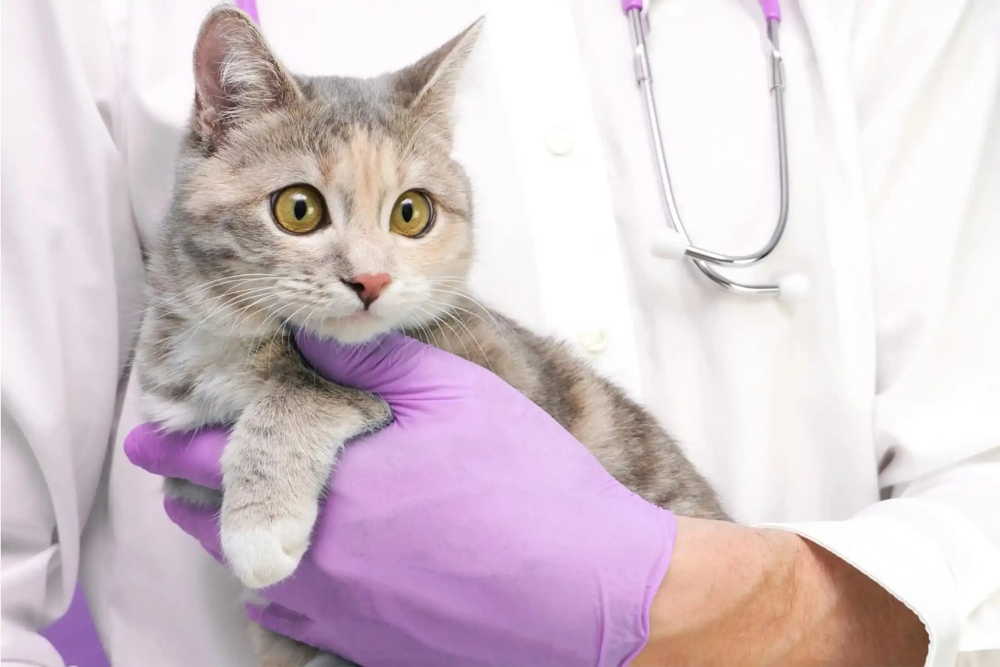
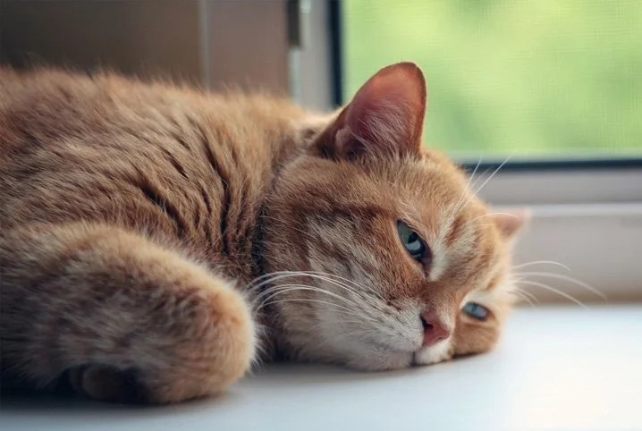
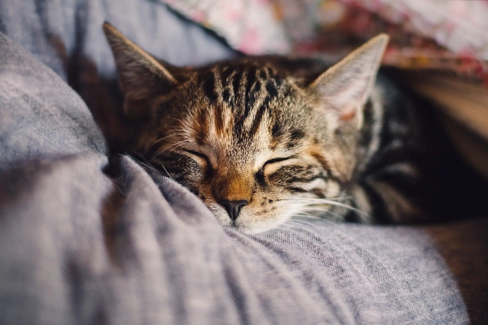
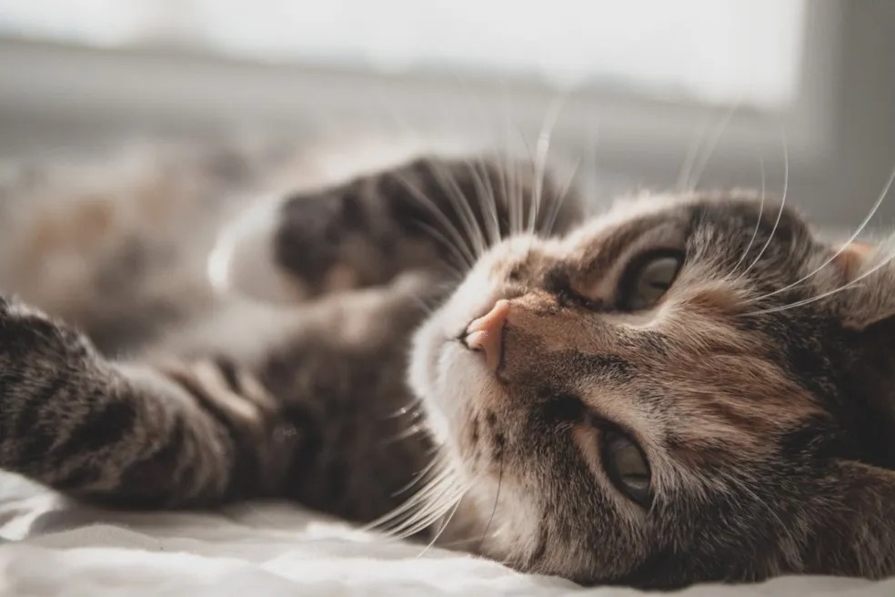
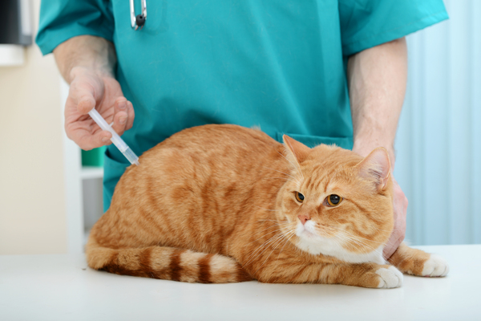
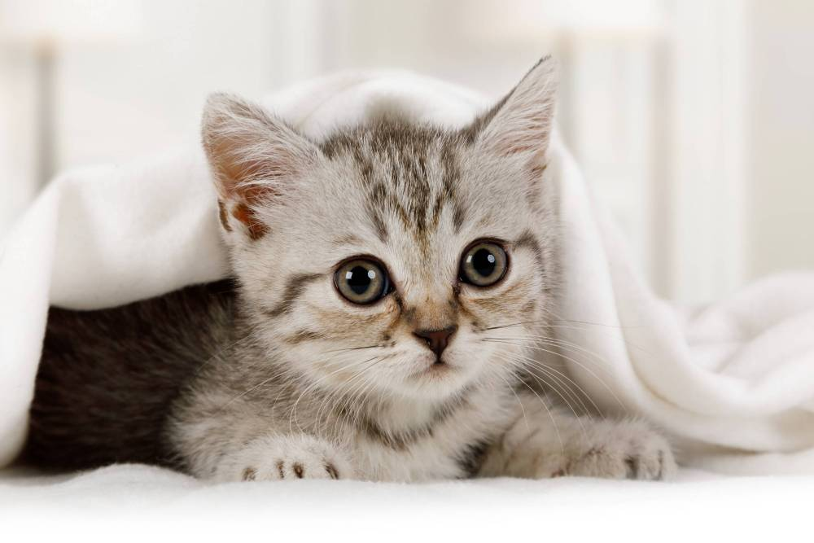

FeLV felina: causas, transmissão e prevenção da doença

Infecção urinária em gatos: conheça as causas e sintomas

Cuidados com gatos idosos: como garantir o bem-estar na fase sênior

Como organizar a rotina do seu pet e evitar o estresse.

Quais são as vacinas essenciais para gatos?

5 doenças comuns em gatinhos filhotes